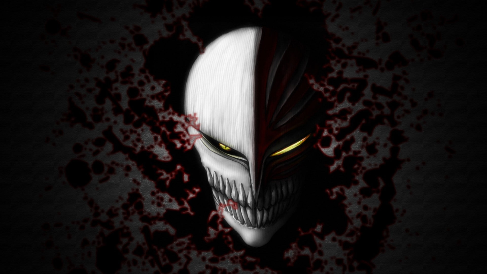

Home
About
Characters
Home
About
Characters
bleach
From Human to shinigami...!
Bleach follows Ichigo Kurosaki, a teenager who accidentally gains the powers of a Soul Reaper(Shinigami) — a guardian who protects humans from evil spirits called Hollows and guides souls to the afterlife.
Main Characters

Kurosaki Ichigo
Kurosaki Ichigo is a teenager with the rare ability to see ghosts. After a chance encounter with a Soul Reaper named Rukia Kuchiki, he inherits her powers and becomes a Substitute Soul Reaper. Tasked with protecting the living from evil spirits called Hollows, Ichigo uncovers hidden strengths, battles powerful enemies, and discovers deep truths about his origins and the spiritual worlds. Brave, determined, and fiercely loyal, Ichigo fights to protect those he cares about — no matter the cost.
Kuchiki Rukia
Kuchiki Rukia is a noble Soul Reaper from the prestigious Kuchiki clan. Calm, disciplined, and brave, she is the one who introduces Ichigo Kurosaki to the world of Soul Reapers by transferring her powers to him. Rukia wields Sode no Shirayuki, an elegant ice-type Zanpakutō known for its beauty and deadly precision. Beneath her reserved exterior, she hides deep compassion and a strong sense of duty.

Orihime Inoue
Orihime Inoue is a kind-hearted and gentle classmate of Ichigo Kurosaki. Though she seems soft-spoken and carefree, she possesses powerful spiritual abilities through her Shun Shun Rikka — six fairy-like spirits that can reject injuries, events, and even reality itself. Deeply caring and emotionally strong, Orihime fights not with violence, but with compassion, always striving to protect her friends no matter the danger.

Uryu Ishida
Uryū Ishida is a calm, intelligent Quincy and one of Ichigo Kurosaki’s closest allies and rivals. As a member of a nearly extinct clan that opposes Hollows using spiritual bows, Uryū holds a deep grudge against Soul Reapers for past injustices. Though initially distant, he eventually joins Ichigo’s group, fighting to protect others while upholding his own values. His precision, strategy, and powerful Quincy techniques make him a vital asset throughout the series.

Sōsuke Aizen
Sōsuke Aizen begins as a calm and respected Soul Reaper captain, but he soon reveals himself as a cunning and powerful traitor. Manipulating events from behind the scenes, he seeks to overthrow the Soul King and reshape reality using the Hōgyoku, a powerful spiritual artifact. Aizen's betrayal shakes the Soul Society to its core, and he becomes the central antagonist through the Soul Society, Arrancar, and Fake Karakura Town arcs. Known for his intellect, charisma, and overwhelming power, Aizen commands the Arrancars and Espada in his quest to become a godlike being. Though eventually defeated and sealed, his presence leaves a lasting impact on every major event in the series.